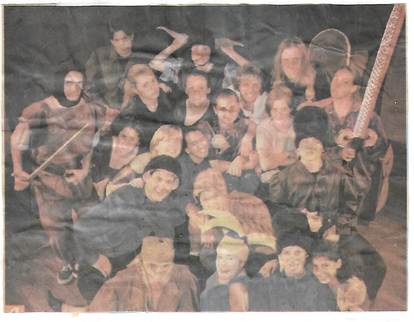
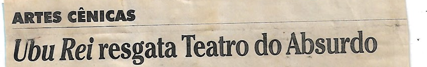
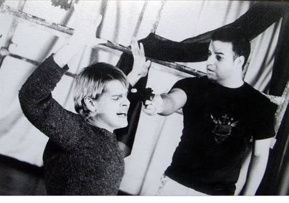

1996
Ubu Rei(ator e figurinista)
Teatro Novelas Curitibanas, Curitiba. Direção de Fernando Klug.
Jornal do Estado, 11/1996


1998
Dorian Gray(ator)
Teatro Carlos Kraid, Curitiba. Temporada única. Adaptação do romance de Oscar Wilde, produção, ator, design gráfico e codireção com Pavlova Carvalho. Com Oscar Reinstein. Fotografia: Felipe Fontoura.
design
Já nesse trabalho eu fazia várias coisas ao mesmo tempo: adaptei o texto, produzi, atuei, codirigi e ainda assinei o design gráfico. Não era método, era o jeito que dava para fazer — e acabou virando método.

Curitiba, 1998. Teatro Antônio Carlos Kraide. Foto: Felipe Fontoura.
Snuffmovies
1998–2003
Projeto de vídeo e música eletrônica com Cristiano Balzan.
música
03